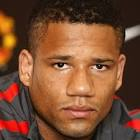

|  | Bebe |
| Gender | Male |
| Ethnic | Portuguese |
| Job | Portuguese Footballer |
| Desc | xxxx |
Affiliation
| Org | xxxx National Team |
| Club as Player | Manchester United |
| xxxx |
2015 01 24 Retrieve
[Bebe on his infamous big-money move to Manchester United] I thought they were kidding with their bid. I was too inexperienced to handle the situation. In Manchester I was a child and was alone
2018 12 14 Retrieve
[By 2014, Bebe could not wait to get out of Manchester United] Every day I called my agent to ask him to get me out. It was a bad time. When you do not play, even if you are at a great club, then you are not happy, so why continue? I remember that I was going for a United game with the youth team, and my agent called me and told me I had been sold to Benfica. It was the best moment of my life! I am a ‘Benfiquista’, it was a dream to play there because all my friends and my family supported Benfica. I did not sleep that day! I spent the whole day awake
t wasn’t that [I didn’t believe in myself], I just know what life is like and I think anyone would have the same thought as me. If you are playing in the third or fourth division in Portugal and suddenly one of the best teams in the world calls you, I think anyone would think ‘Can this actually be true?’. I felt that way for a week or two, thinking that they were joking with me. When I signed, I didn’t go to England but instead spent four days in Portugal. And I still thought they were kidding. I went to Carrington, I met all the players for the first time but I still thought that it was a lie! But the moment I spoke with Ferguson, that was when I thought: ‘finally I am here’. I started believing it in my head on that day, it took a lot to believe it!
It was everything. I was one person before entering the orphanage, and when leaving I was another person entirely. I owe everything to my grandmother, because she put me in there. But above all, I owe it to the people who educated me and who trusted me, who supported me in my career, and who gave me the desire and strength to keep fighting and dreaming about playing football. Without these people it would not be possible, because at the orphanage I learned everything. I learned to play football there, because I had not liked it very much before then. And I learned to be the person that I am today
I came from an orphanage, and signing for United forced me to change my routine, and leave behind my second family. There were many children, I was 19 years old and I did not want to leave them behind. I had a hard time changing my life: from not having anything to having everything. That cost me a lot, and the adaptation was very complicated for me
He spoke very little, but when he spoke he got his point across. He was a humble person who helped the kids a lot. But when he was training he did not like jokes, he was very serious, he trained really hard. He was a person who helped me a lot too. The first year I stayed in his apartment, in a house he was renting out. It was a good relationship, also because the people who worked with my agent had a good relationship with the coach. I don’t know if he rented me the house to have me under a bit more control, but he would obviously know when I was at home if he had me renting his place!
I can’t regret something that has given me so much food, that changed my life and the life of my family. United gave me everything. That’s where everything started for me. I could have a car, a house, I could buy things that I couldn’t have bought before. I could help my family and friends in things they couldn’t do… I do not regret anything. It was a very good decision from me and my agent. If I had the mentality then that I have today, I would definitely still be there. I would be in a team like that. But I had a different childhood from the others, and the attitudes and thoughts I had were different. That did not help me at all, not that I regret it. But now I would tell my younger self to train more, to be more concentrated, to be more professional
I hope to have a small business, it’s something I’ve always wanted to open up. And then just be calm with my family and my son. I do not ask for more than that. Just enjoy life, without discomfort